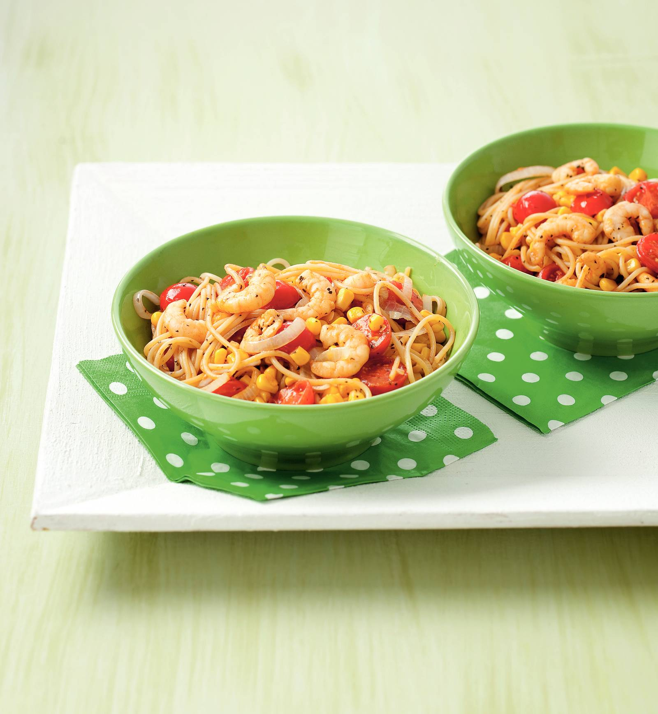

Spaghetti met kruidige garnalen en tomaatjes

Ingredienten
- 300 g spaghetti
- 1 ui
- 500 g cherrytomaten
- 3 el wokolie
- 300 g diepvries wokgarnalen
- 300 g cripsy mais
- 2 tl gedroogde munt
Bereiding
- Kook de spaghetti volgens de aanwijzingen op de verpakking beetgaar.
- Snijd de ui in halve ringen. Halveer de cherrytomaten. Verhit de olie in een wok en fruit de ui 1 min. Voeg
de tomaten toe en bak 3-4 min. Voeg de bevroren garnalen en de mais toe en bak al omscheppend 5 min.
- Schep de spaghetti erdoor en verwarm al omscheppend nog 1 min. Breng op smaak met de munt, peper en zout.
Verdeel over de kommen
Variatietip Bak voor een extra smaakaccent 1 rode paprika in repen mee, tegelijkertijd met de
garnalen en mais.